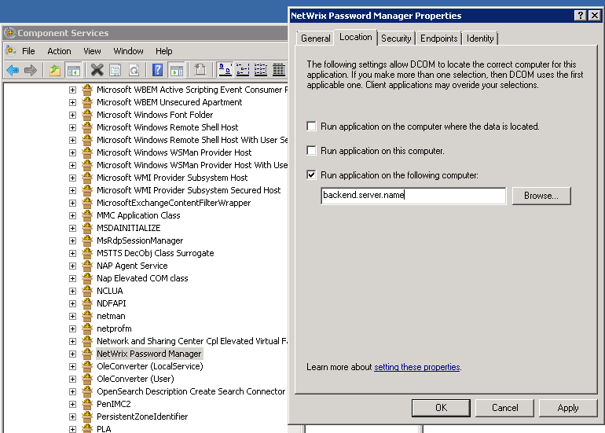

What is the procedure to update Password Manager?
Prior to upgrade backup the following files from the product installation directory (on backend in case of DMZ setup). This is done for emergency and normally these files will not be required later.

Prior to upgrade backup the following files from the product installation directory (on backend in case of DMZ setup). This is done for emergency and normally these files will not be required later.
- alinfo.bin
- secrets.bin
- Predefined Questions.txt
- Templates folder
- Procedure for single server setup
- Run the installer and follow the instructions of the wizard. All settings will be saved so there is no additional configuration or re-configuration required
- Procedure for DMZ installation
- Run the installer on the backend server under an account with local admin permissions. Setup will update all product files but will not change any product settings (or IIS settings if it is installed on BE)
- Run the installer on the frontend server under an account with local admin permissions. Setup will update all product files, including PRMService.exe (this file will be recreated if you removed it previously)
- Make sure the Netwrix Password manager service is still disabled on the frontend server
- Navigate to the product installation directory and rename PRMService.exe to PRMService.exe.old
- Run Task Manager and make sure there is no PRMService.exe process running on the frontend server
- Check that DCOM settings for Password Manager didn't change:
- Run Component Services configuration (Start - Run - dcomcnfg),
- Navigate to Component services - Computers - My computer - DCOM config - Netwrix Password Manager
- Right click Netwrix Password Manager node and select Properties
- Go to Location tab and make sure that Run application on this computer checkbox is disabled and Run application on the following computer is enabled and points to the backend

NOTE. For the update it is possible to use both the Identity Management
installer or explicit installer prm_setup.exe that you may get from
support
NOTE. Though all new versions of the server are backward compatible with
older versions of clients, it is recommended to update Password Manager clients on
workstations as well. It can be done with help of prm_client.msi installer that can be either found in the product installation directory or received from
support.
NOTE. It may be required to restart the Netwrix Password Manager service upon
completion of the upgrade.